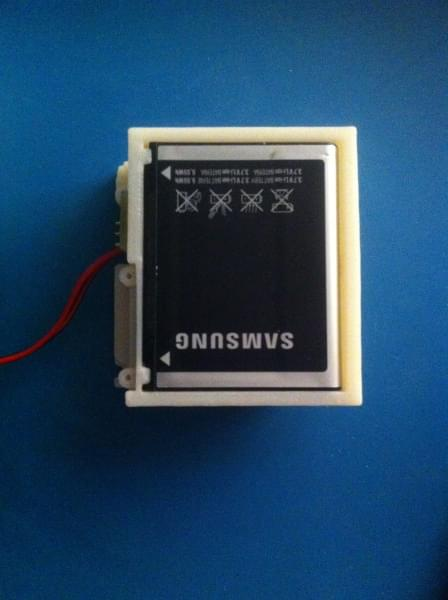
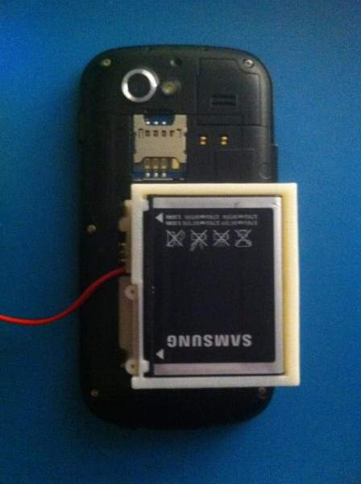
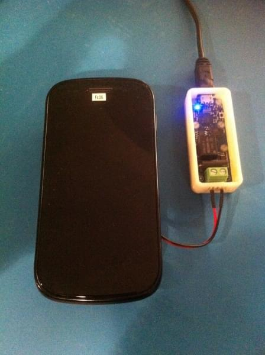
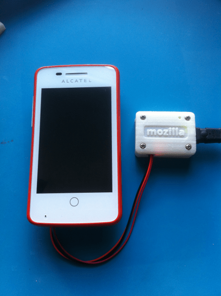

FxOS Powertool is a command-line-based, power testing framework that is useful to optimize client software/applications for power consumption. The tool collects data from multiple tests and outputs them with basic statistics calculations. This page walks you through how to use this tool with examples.
The FxOS Powertool is intended for FxOS developers to use when optimizing software/apps for power consumption. It is also handy for verifying and fixing power consumption bugs. This is the client software part of the power testing framework.
This tool requires that you have a USB ammeter device like the Yoctopuce USB ammeter or build your own using the Mozilla open hardware ammeter.
Along with an ammeter, you will also need a battery harness for your FxOS device. The battery harnesses are open hardware designs consisting of a 3D printed part and a small circuit board for plugging in the ammeter. If you wish to build a harness yourself, you can download the 3D printer and circuit board files. Currently we have working designs for the following FxOS devices:
The first step is to clone the repo. The FxOS Powertool! is written in Python and uses the Tkinter UI package and should be cross-platform. Using git, clone the repo:
$ git clone git://github.com/JonHylands/fxos-powertool
Then install the application and dependencies:
$ cd fxos-powertool $ sudo python ./setup.py install
The next step is to create a test suite description file. The FxOS Powertool! uses the description file to know what tests you plan on running and it organizes the collected data under each test. A test suite description file looks like:
{
"title": "My Tests",
"tests": [
"My first test",
"My second test",
"My third test"
]
}
Next you need to set up your hardware. Pull the battery from your FxOS device and place it in the 3D printed battery harness:

Then put the battery harness into your device:

And then plug in your ammeter:

Now you're ready to start the FxOS Powertool! and begin collecting data.
The FxOS Powertool! is a command line utility. Here are the command line options for executing the tool:
usage: powertool [-h] -d {yocto,mozilla} [-p PATH] -u {tk,cli} [-f FILE]
[-o OUT] [-s SHOW]
Mozilla Powertool
optional arguments:
-h, --help show this help message and exit
-d {yocto,mozilla}, --device {yocto,mozilla}
specify ammeter device to use
-p PATH, --path PATH specify path to ammeter device (e.g. /dev/ttyACM0)
-u {tk,cli}, --ui {tk,cli}
specify which UI to use
-f FILE, --file FILE test run config file
-o OUT, --out OUT output data file
-s SHOW, --show SHOW name of the sample source to display
The FxOS Powertool! supports saving the collected data in two different formats. It determines the format from the file extension of the file specified in the --out option. Currently it supports JSON and comma separated values formats. If my test suite description file is called mytests.json, I am using a Yoctopuce ammeter, I want the Tk GUI to show the current consumption graph, and I want the collected data to be saved in .csv files, my command line would look like this:
$ powertool -d yocto -p /dev/ttyUSB0 -u tk -s current -f mytests.json -o mytests.csv
If I'm using the Mozilla ammeter with the same test parameters, my command line would look like this:
$ powertool -d mozilla -p /dev/ttyACM0 -u tk -s current -f mytests.json -o mytests.csv
You should see the Tk GUI start up and the title of your first test appear in the title bar of the app:
The FxOS Powertool! uses keyboard shortcuts for controlling the collection of data and navigating through the tests. Now that the GUI is open, you can start/stop collecting data for the currently selected test by hitting the spacebar. When you hit the spacebar the first time, data collection will begin. To stop data collection, just hit the spacebar again. Each data collection run will be recorded as a row of data in the output files. Below is a screenshot of a data run:
You may repeat data runs for a given test as many times as you like. You may even navigate to another test or tests, and do data runs for those tests, then come back to a previous test and continue doing data runs. The FxOS Powertool! will not lose any data and it will do the right thing and aggregate the data runs for each test into the correct data files for each test. Navigating between tests is done using the 'L' and 'H' keys on the keyboard. 'L' moves to the next test in the list. 'H' moves to the previous test. Below is a screenshot of a two test data run:
After you have collected all of the data for your tests, the data files are written to disk when you quit the application. You can quit by either clicking on the close window button in the title bar or hitting the 'Q' button on the keyboard. In our example, we chose to have the data written out in CSV format by giving it "mytests.csv" as the --out parameter value. With CSV, the application will create a directory named "mytests" and then write out a CSV file for each test with all of the data gathered for the test. Below is a screenshot of the "My first test" CSV file open in a spreadsheet application:
As you can see, the FxOS Powertool! will do some very basic statistical calculations for you. Along with the raw data for each data run, it will calculate the minimum value, maximum value, mean, and standard deviation for all of the data collected for the test.
{kind=link}
{kind=link}
{kind=link}
{kind=link}